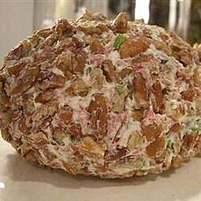

Beef Ball

Break out the beef ball and get the party rolling! Dried chipped beef and cheese are rolled into a tantalizing treat that's great with buttery, round crackers, vegetables and tortilla chips.
Ingredients
3 (8ounce) jars dried chipped beef
2 (8 oounce) packages cream chees, softened
1 tablespoon prepared horseradish
1/4 cup chopped green bell pepper
1/4 cup chopped red bell pepper
1/4 teaspoon ground black pepper
1/4 cup shredded Cheddar cheese
Directions
Step 1
In a medium saucepan over medium heat, cook and stir the dried chipped beef in butter until evenly browned.
Step 2
In a medium bowl, whip the cream cheese, horseradish, green bell pepper, red bell pepper and pepper until well blended. Mix in 2/3 of the beef. Roll into a ball.
Step 3
Roll the ball in the remaining beef and the Cheddar cheese. Wrap in plastic and chill in the refrigerator at least 1 hour before serving.
Back